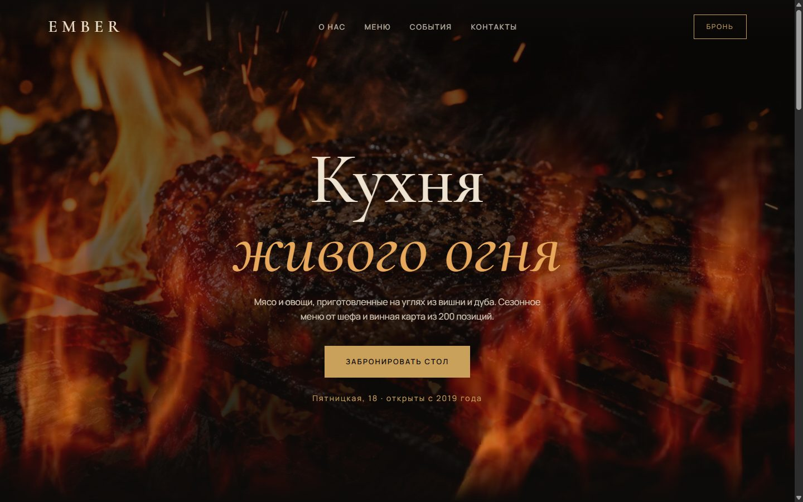
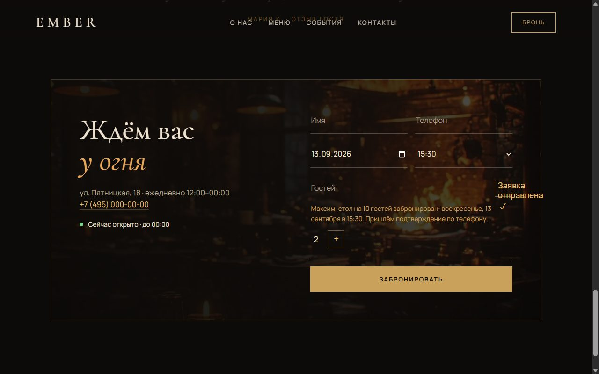
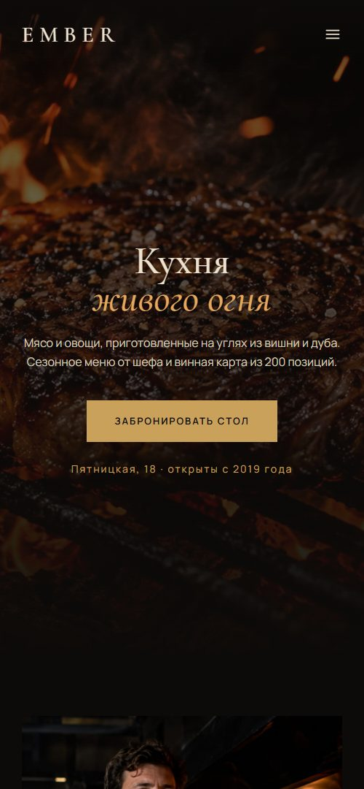

Концепт лендинга для ресторана, где продаёт атмосфера: огонь, дым и ощущение вечера, который хочется повторить. Задача сайта: довести гостя от первого впечатления до забронированного стола меньше чем за минуту.

Сайты ресторанов обычно либо перегружены (PDF-меню, слайдеры, всплывающие окна), либо превращаются в визитку без действия. Гость приходит с одним вопросом: «хочу сюда сегодня, есть ли стол?», а ответ спрятан за звонком.
Для ресторана с сильной концепцией сайт должен сначала передать настроение, а затем не мешать бронированию: без лишних шагов, без выбора прошедшего времени и без сюрпризов с большой компанией.
Это концепт-проект: заказчик и отзывы вымышлены, а решения и функциональность настоящие и работают на опубликованном сайте.
Решает здесь и сейчас с телефона. Нужны: атмосфера за 3 секунды, цены, свободное время сегодня.
Ищет площадку для 8–40 человек. Нужны: форматы событий, закрытый зал, понятный следующий шаг.
Сравнивает рестораны. Нужны: кухня, шеф, происхождение продуктов, отзывы.
Сайт открывают вечером и в полумраке. Тёмный фон с тёплым золотом повторяет свет углей и не слепит. Контраст второстепенного текста поднят до читаемого: тёмная тема не оправдание серому по чёрному.
Cormorant Garamond с курсивом для заголовков даёт ресторанную «рукописность», а Manrope в тексте даёт чистую читаемость цен и описаний. Цены вынесены вправо и выровнены, чтобы меню сканировалось, как в карте.
От декоративных градиентов отказался в пользу сгенерированных фото с единой светотенью: огонь, шеф, зал. Каждое фото отвечает на вопрос гостя, а не заполняет место.
Пять позиций сезонного меню прямо на странице. Этого достаточно, чтобы понять кухню и чек, без загрузки файла на телефоне.
Первый экран: съёмка настоящего пламени поверх фото стейка. Шейдерный огонь пробовал и отказался: он выглядел нарисованным. Ролик замедлен вдвое, чтобы пламя дышало, а не мелькало, и гаснет при прокрутке.


Сайт свёрстан на чистых HTML, CSS и JavaScript: без фреймворков и сборки. Страница открывается мгновенно и легко переносится на любой хостинг или CMS.